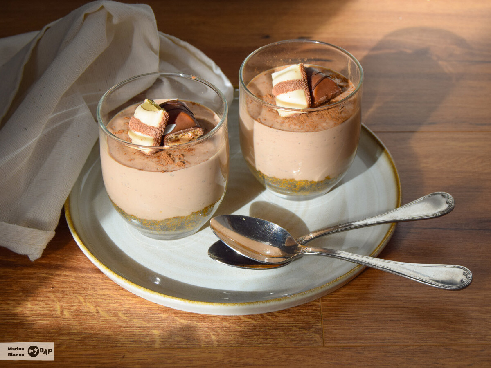

Vasitos cremosos de chocolate Kinder

Caracteristicas
- Tiempo total: 10 minutos
- Tiempo de elaboracion: 5 minutos
- Tiempo de coccion: 5 minutos
- Dificultad: Fácil
Ingredientes
| Ingredientes | Cantidad |
|---|---|
| Galletas tipo digestive | 150 g |
| Mantequilla derretida | 75 g |
| Queso crema | 200 g |
| Azúcar | 45 g |
| Nata liquida | 150 ml |
| Kinder chocolate | 125 g |
| Barrita Kinder bueno | 4 |
| Cacao en polvo | Al gusto |
Elaboración
1. Triturar las galletas para mezclarlas con la mantequilla derretida y
tendremos a punto la base de nuestros vasitos.
2. Rellena cuidadosamente el fondo de los vasitos prensando
bien la mezcla de galletas con una cuchara.
3. Derretimos el chocolate con la nata líquida y una vez esté
completamente mezclado agregamos el azúcar y el queso crema,
removemos de nuevo hasta que quede totalmente integrado.
4. SI queremos un sabor más intenso a chocolate,
podemos agregar una cucharada de cacao puro en polvo a la mezcla.
5. Repartimos la mezcla en los vasitos y dejamos reposar en la nevera 6 horas.
6. Retiramos los vasitos de la nevera y los servimos espolvoreados
con un poco de cacao en polvo, y unos trocitos de Kinder bueno.
Notas
Estos vasitos de kinder chocolate son el postre perfecto para sorprender a los más golosos. Con una textura suave, un sabor irresistible y presentados en vasitos individuales, son ideales para disfrutar en casa.